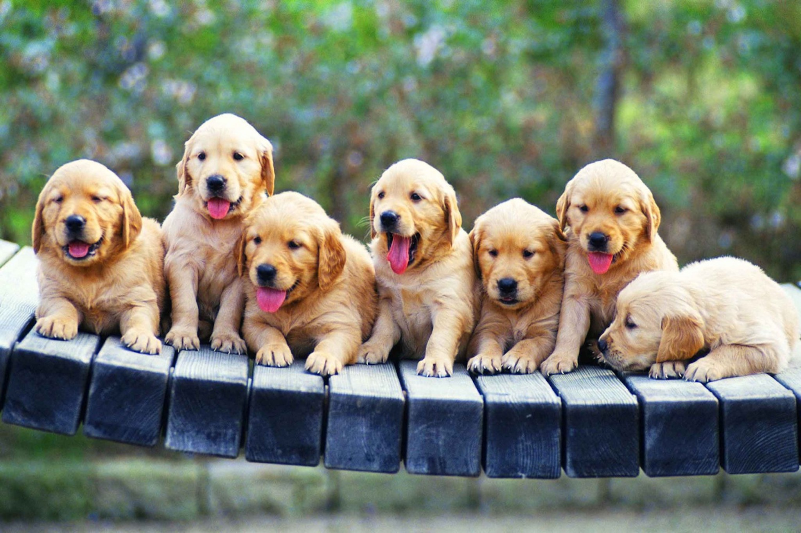
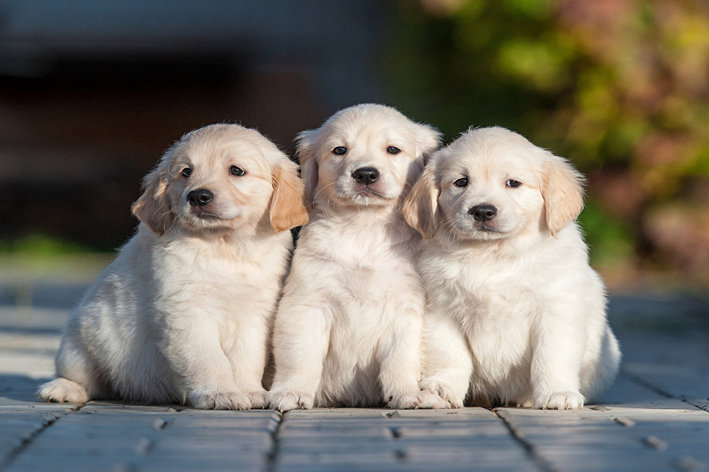

Misión

Somos una ONG en Nuevo León que fomentamos una cultura de responsabilidad y respeto hacia la vida animal. Logrando desarrollar a través de nuestros programas de ADOPCIÓN una cadena de voluntarios que luchamos contra la indiferencia.
Este espacio de facebook en su mayor parte está destinado para buscar hogar y familias para perritos y gatitos que viven en la calle, fueron abandonados o simplemente sus familias ya no los quieren.
Fomentar una cultura de respeto y responsabilidad donde el bienestar animal complemente la búsqueda del bienestar humano y la sostenibilidad del medio ambiente.
ADOPTA. Esteriliza. Involúcrate.
Visión

¿Hacia dónde vamos?
Hacia una creación de conciencia y de responsabilidad respecto a los animales de compañía. Esto se logra tanto al cubrir sus necesidades de alimentación, de salud y afecto, como al fomentar la esterilización para disminuir cada vez más la sobrepoblación de animales en la calle que no sólo sufren y mueren en las mismas, sino que representan un riesgo para el medio ambiente y la salud de la población.
Historia
Prodefensa Animal A.C. tiene sus inicios en 1999, por su Fundador y Presidente actual, la Sra. Elvia Silveyra.
En el año 2000 se constituye formal y legalmente en una A.C. y poco a poco se unen más personas, quienes comienzan a incluir a veterinarios, y a realizar actividades de captación de fondos para subsidiar las esterilizaciones.
En el año 2001 a través de la difusión de internet y el empuje de gente nueva, se inician vínculos más fuertes con otras asociaciones en la república así como en el extranjero como Peta, IFAW, Best Friends, entre otros.
En el año 2002 se consolida el trabajo en el antirrábico más grande y menos favorecido del área: San Bernabé. Se hacen donaciones para las instalaciones y se hace constante la difusión de fotos y de la situación vivida en ese lugar.
En el 2004 toma posesión una mesa directiva, incluyendo Presidente, Vicepresidente, Secretario, Tesorero, Comisario y 4 vocales; que inician con juntas oficiales y de connotación legal.
A finales del 2004 se pone en forma la oficina en la colonia Tampiquito y se hace la contratación de una veterinaria y de un rescatista.
En el 2005, Prodan es oficialmente sociedad miembro de la World Society for the Protection of Animals , e inicia una relación de apoyo con la IFAW (www.ifaw.org).
Durante el 2006 inicia la CLINICA VETERINARIA SILVEYRA, un proyecto para ofrecer sustentabilidad a la organización, el proyecto cuenta con un staff de 5 personas: administradora, recepcionista, rescatista y dos veterinarios.
Se contabilizan a partir del 2006 más de 600 adopciones por año, cerrando el 2007 con un total de 962 mascotas rescatadas y 617 dadas en adopción.
A partir de Septiembre del 2006, arranca el programa de adopción con la participación de diferentes organizaciones.
Se lograron enviar en el primer segmento un total de 22 perros cumpliendo con un protocolo clínico y de comportamiento.
En el 2008 iniciamos con un proyecto de adopción a nivel nacional, liderado por una empresa de productos para mascotas que se une a la labor de fomentar cambios culturales, promoviendo la adopción en lugar de la compra. Dando apertura a nuestro trabajo de difusión.
Desde el año 2001 hasta la fecha, PRODAN tiene presencia anual con impacto cultural, en Exposiciones como ExpoCan, ExpoMascotas y Expo Tu Ayuda.